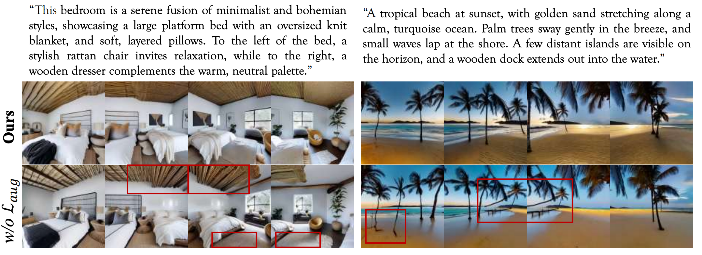
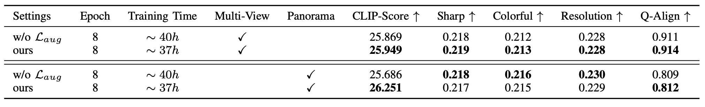

Ablation Study on Consistency-Augmented Loss
Ablation study on consistency-augmented loss Laug. Without Laug, cross-view texture discrepancies become pronounced, with abrupt background artifacts (e.g., exposed ceilings in bedroom scenes) and physically implausible anomalies (e.g., floating, distorted trees on beaches) emerging.

We further report the training time of the Ego-centric Generator and the vanilla version without Laug. The quantitative results illustrate that our proposed Laug enhances the training of the diffusion process, thus improving the semantic alignment and perceptual quality.
